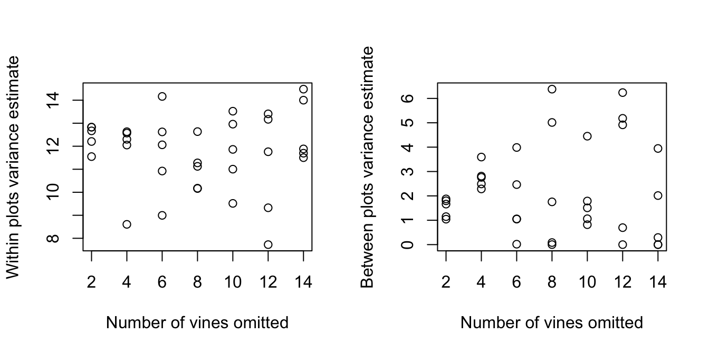

7 Answers to Selected Chapter 7 Exercises
Multilevel models, and repeated measures
library(DAAG)The final two sentences of Exercise 1 are challenging!
Exercises 1 & 2 should be asterisked.
Exercise 1
Repeat the calculations of Subsection 7.4.5, but omitting results from two vines at random. Here is code that will handle the calculation:
n.omit <- 2
take <- rep(TRUE, 48)
take[sample(1:48,2)] <- FALSE
kiwishade.lmer <- lmer(yield ~ shade + (1|block) + (1|block:plot),
data = kiwishade,subset=take)
vcov <- show(VarCorr(kiwishade.lmer))
gps <- vcov[, "Groups"]
print(vcov[gps=="block:plot", "Variance"])
print(vcov[gps=="Residual", "Variance"])Repeat this calculation five times, for each of n.omit = 2, 4, 6, 8, 10, 12 and 14. Plot (i) the plot component of variance and (ii) the vine component of variance, against number of points omitted. Based on these results, for what value of n.omit does the loss of vines begin to compromise results? Which of the two components of variance estimates is more damaged by the loss of observations? Comment on why this is to be expected.
For convenience, we place the central part of the calculation in a function. On slow machines, the code may take a minute or two to run.
library(lme4)Loading required package: Matrixtrashvine <- function(n.omit=2)
{
k <- k+1
n[k] <- n.omit
take <- rep(T, 48)
take[sample(1:48, n.omit)] <- F
kiwishade$take <- take
kiwishade.lmer <- lmer(yield ~ shade + (1 | block) + (1|block:plot),
data = kiwishade, subset=take)
varv <- as.numeric(attr(VarCorr(kiwishade.lmer), "sc")^2)
varp <- as.numeric(VarCorr(kiwishade.lmer)$`block:plot`)
c(varp, varv)
}
varp <- numeric(35)
varv <- numeric(35)
n <- numeric(35)
k <- 0
for(n.omit in c( 2, 4, 6, 8, 10, 12, 14))
for(i in 1:5){
k <- k+1
vec2 <- trashvine(n.omit=n.omit)
n[k] <- n.omit
varp[k] <- vec2[1]
varv[k] <- vec2[2]
}boundary (singular) fit: see help('isSingular')boundary (singular) fit: see help('isSingular')
boundary (singular) fit: see help('isSingular')
boundary (singular) fit: see help('isSingular')The following show within, and between, plots variance estimates as functions of the number of vines that were omitted at random

As the number of vines that are omitted increases, the variance estimates can be expected to show greater variability. The effect should be most evident on the between plot variance. Inaccuracy in estimates of the between plot variance arise both from inaccuracy in the within plot sums of squares and from loss of information at the between plot level.
At best it is possible only to give an approximate d.f. for the between plot estimate of variance (some plots lose more vines than others), which complicates any evaluation that relies on degree of freedom considerations.
Exercise 2
Repeat the previous exercise, but now omitting 1, 2, 3, 4 complete plots at random.
trashplot <- function(n.omit=2)
{
k <- k+1
n[k] <- n.omit
plotlev <- levels(kiwishade$plot)
use.lev <- sample(plotlev, length(plotlev)-n.omit)
kiwishade$take <- kiwishade$plot %in% use.lev
kiwishade.lmer <- lmer(yield ~ shade + (1 | block) + (1|block:plot),
data = kiwishade, subset=take)
varv <- as.numeric(attr(VarCorr(kiwishade.lmer), "sc")^2)
varp <- as.numeric(VarCorr(kiwishade.lmer)$`block:plot`)
c(varp, varv)
}
varp <- numeric(20)
varv <- numeric(20)
n <- numeric(20)
k <- 0
for(n.omit in 1:4)
for(i in 1:5){
k <- k+1
vec2 <- trashplot(n.omit=n.omit)
n[k] <- n.omit
varp[k] <- vec2[1]
varv[k] <- vec2[2]
}boundary (singular) fit: see help('isSingular')
boundary (singular) fit: see help('isSingular')
boundary (singular) fit: see help('isSingular')Again, we plot the results. Plots show within, and between, plots variance estimates as functions of the number of whole plots (each consisting of four vines) that were omitted at random.
Omission of a whole plot loses 3 d.f. out of 36 for estimation of within plot effects, and 1 degree of freedom out of 11 for the estimation of between plot effects, i.e., a slightly greater relative loss. The effect on precision will be most obvious where the d.f.
are already smallest, i.e., for the between plot variance. The loss of information on complete plots is inherently for serious, for the estimation of the between plot variance, than the loss of partial information (albeit on a greater number of plots) as will often happen in Exercise 1.
Exercise 2
The data set Gun (MEMSS package) reports on the numbers of rounds fired per minute, by each of nine teams of gunners, each tested twice using each of two methods. In the nine teams, three were made of men with slight build, three with average, and three with heavy build. Is there a detectable difference, in number of rounds fired, between build type or between firing methods? For improving the precision of results, which would be better – to double the number of teams, or to double the number of occasions (from 2 to 4) on which each team tests each method?
It does not make much sense to look for overall differences in Method; this depends on Physique. We therefore nest Method within Physique.
library(MEMSS)
Attaching package: 'MEMSS'The following objects are masked from 'package:datasets':
CO2, Orange, TheophGun.lmer <- lmer(rounds~Physique/Method +(1|Team), data=Gun)
summary(Gun.lmer)Linear mixed model fit by REML ['lmerMod']
Formula: rounds ~ Physique/Method + (1 | Team)
Data: Gun
REML criterion at convergence: 127
Scaled residuals:
Min 1Q Median 3Q Max
-2.15599 -0.64718 0.09981 0.63382 1.67447
Random effects:
Groups Name Variance Std.Dev.
Team (Intercept) 1.091 1.044
Residual 2.180 1.476
Number of obs: 36, groups: Team, 9
Fixed effects:
Estimate Std. Error t value
(Intercept) 23.5889 0.4922 47.922
Physique.L -0.9664 0.8526 -1.133
Physique.Q 0.1905 0.8526 0.223
PhysiqueSlight:MethodM2 -8.4500 0.8524 -9.913
PhysiqueAverage:MethodM2 -8.1000 0.8524 -9.503
PhysiqueHeavy:MethodM2 -8.9833 0.8524 -10.539
Correlation of Fixed Effects:
(Intr) Phys.L Phys.Q PS:MM2 PA:MM2
Physique.L 0.000
Physique.Q 0.000 0.000
PhysqSl:MM2 -0.289 0.353 -0.204
PhysqAv:MM2 -0.289 0.000 0.408 0.000
PhysqHv:MM2 -0.289 -0.353 -0.204 0.000 0.000A good way to proceed is to determine the fitted values, and present these in an interaction plot:
Gun.hat <- fitted(Gun.lmer)
interaction.plot(Gun$Physique, Gun$Method, Gun.hat)Differences between methods, for each of the three physiques, are strongly attested. These can be estimated within teams, allowing 24 degrees of freedom for each of these comparisons.
Clear patterns of change with Physique seem apparent in the plot. There are however too few degrees of freedom for this effect to appear statistically significant. Note however that the parameters that are given are for the lowest level of Method, i.e., for M1. Making M2 the baseline shows the effect as closer to the conventional 5% significance level.
The component of variance at the between teams level is of the same order of magnitude as the within teams component. Its contribution to the variance of team means (1.044\(^2\)) is much greater than the contribution of the within team component (1.476\(^2\)/4; there are 4 results per team). If comparison between physiques is the concern; it will be much more effective to double the number of teams; compare (1.044\(^2\)+1.476\(^2\)/4)/2 (=0.82) with 1.044\(^2\)+1.476\(^2\)/8 (=1.36).
Exercise 4
*The data set ergoStool (MEMSS package) has data on the amount of effort needed to get up from a stool, for each of nine individuals who each tried four different types of stool. Analyse the data both using aov() and using lme(), and reconcile the two sets of output. Was there any clear winner among the types of stool, if the aim is to keep effort to a minimum?
For analysis of variance, specify
aov(effort~Type+Error(Subject), data=ergoStool)
Call:
aov(formula = effort ~ Type + Error(Subject), data = ergoStool)
Grand Mean: 10.25
Stratum 1: Subject
Terms:
Residuals
Sum of Squares 66.5
Deg. of Freedom 8
Residual standard error: 2.883141
Stratum 2: Within
Terms:
Type Residuals
Sum of Squares 81.19444 29.05556
Deg. of Freedom 3 24
Residual standard error: 1.100295
Estimated effects may be unbalancedFor testing the Type effect for statistical significance, refer (81.19/3)/(29.06/24) (=22.35) with the \(F_{3,24}\) distribution. The effect is highly significant.
This is about as far as it is possible to go with analysis of variance calculations. When Error() is specified in the aov model, R has no mechanism for extracting estimates. (There are mildly tortuous ways to extract the information, which will not be further discussed here.)
For use of lmer, specify
summary(lmer(effort~Type + (1|Subject), data=ergoStool))Linear mixed model fit by REML ['lmerMod']
Formula: effort ~ Type + (1 | Subject)
Data: ergoStool
REML criterion at convergence: 121.1
Scaled residuals:
Min 1Q Median 3Q Max
-1.80200 -0.64317 0.05783 0.70100 1.63142
Random effects:
Groups Name Variance Std.Dev.
Subject (Intercept) 1.775 1.332
Residual 1.211 1.100
Number of obs: 36, groups: Subject, 9
Fixed effects:
Estimate Std. Error t value
(Intercept) 8.5556 0.5760 14.853
TypeT2 3.8889 0.5187 7.498
TypeT3 2.2222 0.5187 4.284
TypeT4 0.6667 0.5187 1.285
Correlation of Fixed Effects:
(Intr) TypeT2 TypeT3
TypeT2 -0.450
TypeT3 -0.450 0.500
TypeT4 -0.450 0.500 0.500Observe that 1.100295\(^2\) (Residual StdDev) is very nearly equal to 29.06/24 obtained from the analysis of variance calculation.
Also the Stratum 1 mean square of 66.5/8 (=8.3125) from the analysis of variance output is very nearly equal to 1.3325\(^2\) +1.100295\(^2\)/4 (= 2.078) from the lme output.
Exercise 5
*In the data set MathAchieve (MEMSS package), the factors Minority (levels yes and no) and sex, and the variable SES (socio-economic status) are clearly fixed effects. Discuss how the decision whether to treat School as a fixed or as a random effect might depend on the purpose of the study? Carry out an analysis that treats School as a random effect. Are differences between schools greater than can be explained by within school variation?
School should be treated as a random effect if the intention is to generalize results to other comparable schools. If the intention is to apply them to other pupils or classess within those same schools, it should be taken as a fixed effect.
For the analysis of these data, both SES and MEANSES should be included in the model. Then the coefficient of MEANSES will measure between school effects, while the coefficient of SES will measure within school effects.
MathAch.lmer <- lmer(MathAch ~ Minority*Sex*(MEANSES+SES) + (1|School),
data=MEMSS::MathAchieve)
MathAch.lmerLinear mixed model fit by REML ['lmerMod']
Formula: MathAch ~ Minority * Sex * (MEANSES + SES) + (1 | School)
Data: MEMSS::MathAchieve
REML criterion at convergence: 46316.33
Random effects:
Groups Name Std.Dev.
School (Intercept) 1.585
Residual 5.982
Number of obs: 7185, groups: School, 160
Fixed Effects:
(Intercept) MinorityYes
12.7993 -2.6055
SexMale MEANSES
1.2772 2.2365
SES MinorityYes:SexMale
2.5085 -0.4623
MinorityYes:MEANSES MinorityYes:SES
1.4387 -1.1007
SexMale:MEANSES SexMale:SES
0.5740 -0.5166
MinorityYes:SexMale:MEANSES MinorityYes:SexMale:SES
-0.7132 0.1103 To get the square roots of variance component estimates, specify:
MathAch.prof <- profile(MathAch.lmer, n=10000)
confint(MathAch.prof, parm=1:2, level=0.95) ## Standard deviations 2.5 % 97.5 %
.sig01 1.347259 1.821391
.sigma 5.880940 6.078772## The following returns the variances:
apply(confint(MathAch.prof, parm=1:2, level=0.95), 2, function(x)x^2) |>
round(2) 2.5 % 97.5 %
.sig01 1.82 3.32
.sigma 34.59 36.95The 95% confidence interval for the between school component of variance extended, in my calculation, from 1.82 to 3.32. See lme4::pvalues for other possible ways to calculate confidence intervals.
If the argument parm is left unspecified, confidence intervals are returned for all parameter estimates.
The number of results for school varies between 14 and 67. Thus, the relative contribution to class means is 5.51 and a number that is at most 5.982429\(^2\)/14 = 2.56.